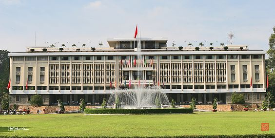
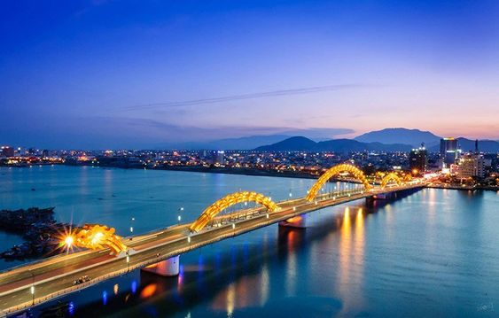
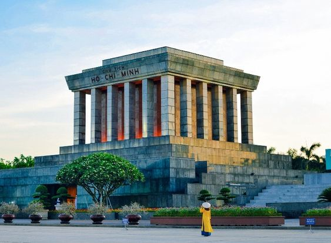
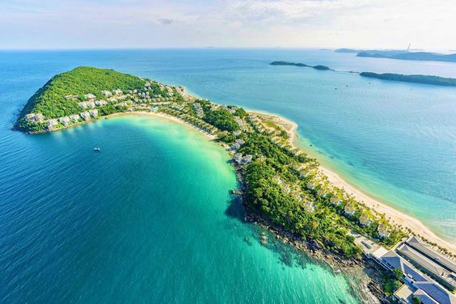
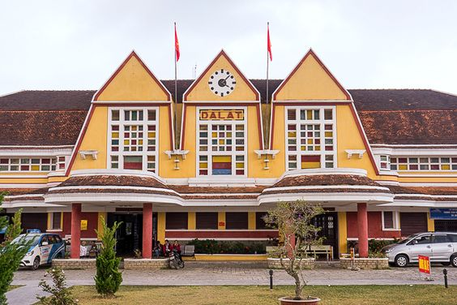

Explore breathtaking destinations with us! From the bustling streets of Hanoi with its ancient temples to the tranquil beaches of Phu Quoc, Vietnam offers a diverse array of experiences. Discover majestic waterfalls in Dalat and immerse yourself.
Discover Ho Chi Minh City through our curated tours, offering a glimpse into its rich history and vibrant culture. From guided visits to iconic landmarks like the War Remnants Museum and the bustling Ben Thanh Market, to immersive experiences in the Mekong Delta's tranquil landscapes, our tours cater to every traveler's interests. With average prices ranging from $50 to $150 per person depending on the duration and inclusions, our expertly crafted itineraries ensure you experience the best of Ho Chi Minh City with comfort and ease. Join us for a journey filled with memorable moments and insightful explorations of this captivating city.
Average price: $50 - $150
Explore Da Nang through our carefully curated tours, unveiling its blend of natural beauty and cultural heritage. From exploring the majestic Marble Mountains and ancient pagodas to relaxing on the pristine shores of My Khe Beach, our tours are crafted to showcase the best of Da Nang. Whether you're discovering the vibrant Han Market or embarking on scenic adventures to Ba Na Hills, our itineraries cater to diverse interests. Prices range from $50 to $150 per person, ensuring you enjoy Da Nang's wonders with comfort and expertise. Join us for an unforgettable journey filled with exploration and relaxation in this coastal gem.
Average price: $50 - $150
Uncover the charm of Hanoi through our thoughtfully designed tours, offering glimpses into its centuries-old history and lively culture. From visiting the timeless Hoan Kiem Lake and historic Temple of Literature to savoring the flavors of Hanoi's famed street food, our tours cater to every traveler's curiosity. Experience the bustling Old Quarter's vibrant markets and serene Tran Quoc Pagoda by joining our expertly crafted itineraries. Prices range from $50 to $150 per person, ensuring you discover Hanoi's essence with comfort and authenticity. Embark on a journey filled with enriching experiences and fond memories of Vietnam's captivating capital.
Average price: $50 - $150
Immerse yourself in the beauty of Phu Quoc with our exclusive tours, designed to highlight its pristine beaches and tropical landscapes. From snorkeling in the crystal-clear waters of An Thoi Archipelago to exploring the vibrant night markets of Duong Dong, our itineraries promise a blend of relaxation and adventure. Discover Phu Quoc's rich marine life and cultural treasures, with prices ranging from $100 to $200 per person. Join us for a journey where you can unwind on sun-kissed beaches and explore the hidden gems of Vietnam's island paradise.
Average price: $100 - $200
Immerse yourself in the beauty of Da Lat with our exclusive tours, designed to highlight its picturesque landscapes and cultural richness. From exploring the enchanting Valley of Love and vibrant Da Lat Flower Gardens to tasting local specialties at bustling night markets, our itineraries promise a blend of relaxation and exploration. Discover Da Lat's unique charm and natural beauty, with prices ranging from $20 to $100 per person. Join us for an unforgettable journey where you can unwind in this serene mountain retreat.
Average price: $20 - $100
